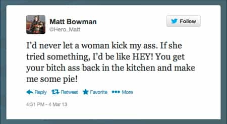

Daryush "Roosh" Valizadeh created ROK in October 2012. You can visit his blog at RooshV.com or follow him on Twitter and Facebook.


Well that didn’t take long. Since I last reported on the antics of misandrist Nitasha Tiku, another feminist has successfully hurt the lives of two men because of tweets that she found offensive.
It started with this National Post article, written by Kyla Garvey:
On November 1 2012 Matt Bowman, whose Twitter handle is @Hero_Matt and features a photograph of him in his firefighter’s uniform, tweeted: “Reject a woman and she will never let it go. One of the many defects of their kind. Also weak arms.” In March he tweeted, “I’d never let a woman kick my ass. If she tried something I’d be like HEY! You get your bitch ass back in the kitchen and make me some pie!” On Thursday he tweeted “the way to a woman’s heart is through anal.”
[…]
Told of the tweets on Friday, David Sheen, division chief of staff services at Toronto Fire, said “I am logging it as a complaint, I am going to investigate it. To me that is not an acceptable attitude to be identified with firefighters in the City of Toronto.”

A follow-up article reveals that the two firemen were indeed fired.
Toronto Fire on Monday terminated three firefighters for what it calls breaches of the city’s policy on social media, a spokesman said Monday evening.
The firing comes one month after the National Post published a story about attempts at Toronto Fire to recruit more women and visible minorities. In that story, the Post republished just a few tweets from accounts connected to two firefighters in Scarborough.
It appears that the answer is more cultural sensitivity training:
Goal number seven of the diversity report is cultural understanding training for all staff. Fire Services have prepared a one to two-hour PowerPoint on cultural understanding, equivalent to health and safety training. Online training will begin at the end of 2013.
Mr. Sheen says it was developed to “make sure that firefighters start to think about cultural differences and how it affects people they serve.” It is also meant to increase awareness of cultural differences in the workplace to make it more welcoming and understanding.
A member at RVF gave a humorous response:
Imagine the following.
A bunch of gender studies women are trapped in a burning building and call 911.
They are given two options by the operator on what kind of emergency rescue they require.A) Gender Normative Fire brigade “The Fancy Gushers”. 50/50 women and men that spend special time on sensitivity training as part of their regular drills.
B) Ladder 666. Consisting of the meanest, most foul mouthed pukes available that piss barbed wire and wouldn’t notice a third-degree burn unless it prevented them from benching an ox.
Which one are you going to pick to come rescue you lady? WHICH ONE!?
Research done by the ROK staff has revealed a sinister motive in regard to her original story. Before I provide her background, let me propose a hypothetical: do you think it would be a good idea for me to write an article in the New York Times about feminism? Probably not, because I have a deep-seated prejudice against the ideology that would prevent me from writing a “balanced” journalistic account for mainstream consumption. It’s the same reason why a judge should excuse himself from a case if he’s financially connected to one of the litigants. In the same vein, no card-carrying feminist should write a newspaper article about “sexism,” since their prejudice against men means they see sexism where sexism may not exist.
Now take a look at Kyla’s background (click for larger size):
Here are the highlights:
I also found another source that states she actually majored in Women’s Studies.
In other words, she’s a man-hater. It seems that she has gone out of her way to not help men, even when working for the Big Brothers organization (she only helped girls). So why did the National Post allow her to denounce two men, when it’s a certainty she harbors resentment against the male gender? Does that sound like patriarchy to you?
Kyla is not even a regular writer for the National Post—she’s a freelancer. She was able to perform a hit-and-run operation and then gain full-time employment at the Ontario Lottery and Gaming commission. She has absolutely no skin-in-the-game when it comes to fair reporting or journalistic integrity, and will go on with her life not feeling empathy for the harm that she has caused. Shame on any society that allows a person like her to unfairly denounce men without repercussions.
An interesting side-note is that this case differs a bit from the standard liberal/Marxist attack formula. It appears that the lower the reputation of the publication where the denouncement is published, the more the attacker must stir up the mob, like Nitashu Tiku did. Since her employer, Gawker, is known to be a disreputable cesspool that publishes without concern for facts, she had to stoke mob anger in order to get Pax Dickinson fired. But all Kyla had to do was say she worked for the National Post and then make a single phone call. That tells you how much power these people have if they work in major newspapers to exercise their feminist agenda. I doubt we have to wait long until the next victim is purged.
Read Next: How To Defeat New York City Media Liberals
{kind=link}